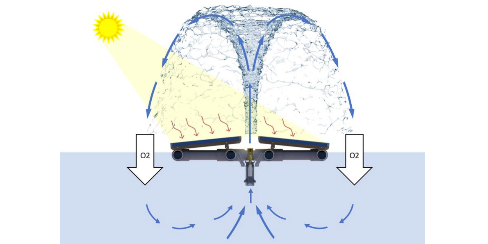
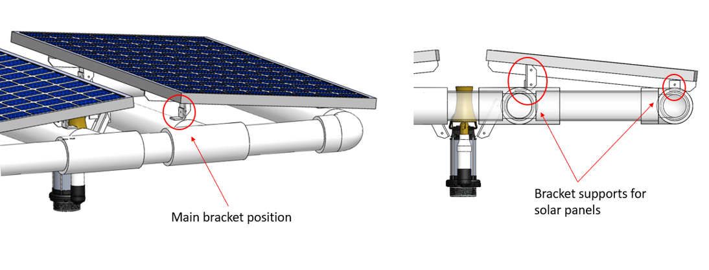
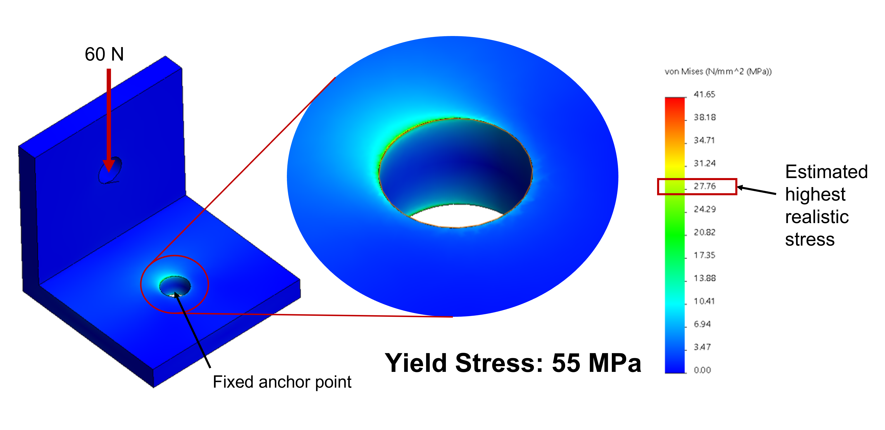
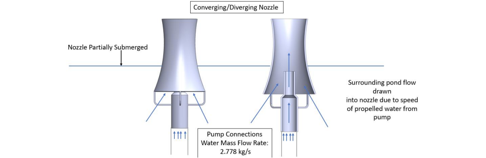
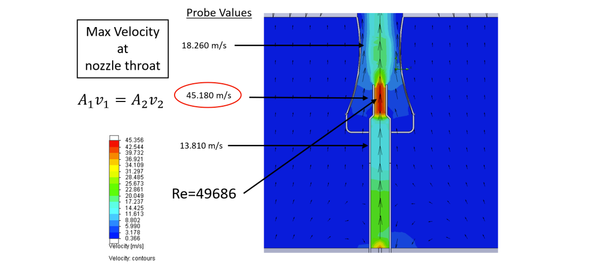
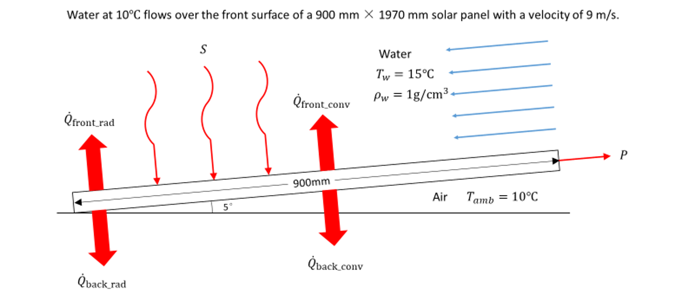
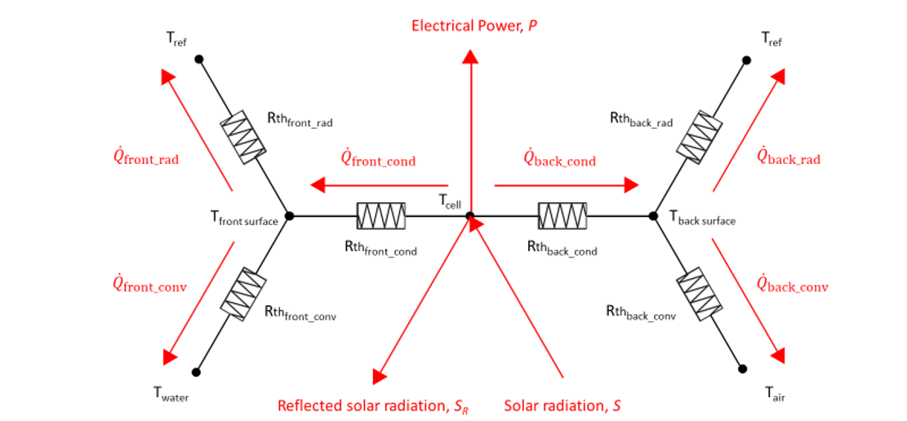

Photovoltaic Floating Pond Aerator
This was my Capstone design project at Unversity of Alberta. The project was undertaken by a team
of five mechanical engineering students. The team was tasked to degisn a photovoltaic floating
pond aerator in golf courses and rural dugouts. The aim of the design is to create a solution to
algae overgrowth that is cost effective, environmentally friendly, and adds to the overall
aesthetics of the pond environment.

Description of Project
In this project, our team accomplished the following tasks:
Defined the problems and did a market research on the current strategies used for pond aeration.
Identified existing standard and regulatory requirements for use and operation.
Investigated possible patent infringement areas.
Identified resources and materials for prototyping and manufacturing, and confirmed the budget.
Available manufacturing processes include CNC machining, injection molding, sheet metal
fabrication, 3D printing, and circuit board assembly.
Made a design specification table with level of importance and made a Gantt chart for the
project management.
Drafted a number of different concept ideas after brainstorming session.
Produced 3 possible conceptual designs that meet the design criteria and made a cost analysis
and an evaluation matrix to select fountain aerator as preliminary design.
Calculated optimal water flow/circulation rate for the aeration of a stardard sized pond.
Calculated stardard oxygen transfer rate of the design at a specific power at aerator shaft.
Calculated total dynamic head and volume flow rate to size pump, nozzle and solar panel.
Calculated ideal pump hydraulic power to compare the required power and supplied power of the
pump.
Calculated and compared net positive suction head available (NPSHA) and net positive suction
head required (NPSHR) to ensure that the pump does not cavitate.
Calculated the buoyancy provided by the floating system and determined the volume of the
submerged frame.
Developed a CAD model of the selected design including dimensioned and toleranced drawings in
SolidWorks.
Analyzed the structural integrity of the main supports connecting the solar panels to the PVC
base frame. The FEA simulation was performed in SolidWorks


Simulated the water flow through a cascade converging-diverging nozzle. The CFD simulation was
performed in SolidWorks.


Found the maximum spray height from the kinematic calculation of water drop using the velocity at
the outlet of the nozzle found in the CFD analysis.
Calculated heat transfer and efficiency of the solar panel with the consideration of water cooling
by utilizing the fountain water falling on the front surface of the solar panel.


Provided vendor list / price list for components/equipment to be purchased.
Performed detailed analysis of custom parts/equipment (e.g. solar photovoltaic system, motor,
pump, spray nozzle/patterns, purpose built equipment).
Performed buy vs build cost analysis.
Analyzed design sustainability and environmental impact.
Evaluated the refined and detailed final design to predict the effective aeration performance.
Summary
The team designed the SolAer 600 as a photovoltaic fountain aeration system for residential and
commercial pond spaces. The SolAer 600 was designed to be easily assembled, disassembled, and
transported by two people. All frame connections are joined with wing nuts minimizing the use of
tools and ensuring a fast assembly time. It was also ensured that no detachable component weighs
more than 50 kg so that the system could be transported without the use of machinery. The SolAer 600
is simple, containing less than five large components. These design considerations resulted in a
compact, aesthetically pleasing, user-friendly, and self-sustaining system.